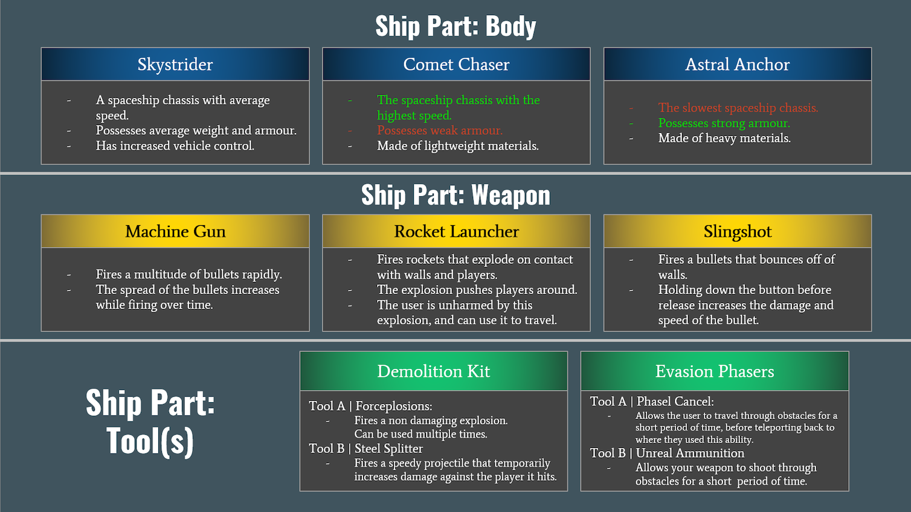

As this project was our first foray into developing software for the PlayStation 5, being a team of purely programmers we aimed for a simple, yet fun, game concept with a suitable scope for a vertical slice.
Sharing a love for a range of first-person-shooter titles, we drew inspiration from them. This led us to develop a semi-competitive player-vs-player game with some mechanical depth.
Considering the anticipated technical challenges that would come with working with architecture we were unfamiliar with, we isolated this to an arcade-style gameplay loop with a top-down camera view of a three-dimensional environment.
With these considerations in mind, we came up with the following concept:
Two players build hovering spacecraft with different ship parts to later shoot one another inside an arena with their chosen ship parts.
We grouped these interchangable parts into Chassis (aka. Bodies), Weapons, and unique Tools. Some weapons included rocket launchers and machine guns, while tools enabled players to perform gimmicks such as phasing through walls or rewinding time.
In any of the game's three arenas, players can take advantage of the game's physics-based movement system. Momentum-oriented movement with a snappy “dash” ability allows for a burst of speed in any direction, further expanded by a physics system allowing players to ricochet projectiles off of walls*, or propel themselves with the explosion of their rocket launcher.
*Hence the name "Refraction"
Overall, this approach of simple and fun-oriented, allowed us to hone our focus on the development of the game's internal systems while still allowing us to deliver a feature-complete and fully playable vertical slice of a game within the 3-month timespan.
My Role
Cool. ...but what did you do?
Most of the areas I was involved in primarily entailed essential systems, such as:
The Camera System,
The Renderer, including the related shaders,
The initial Entity-Component System for our game objects,
Shader-driven lighting using The Phong Lighting Model, with Light Sources and Directional Shadows,
and Data-driven Texture and Model Asset Sourcing, Reading and Loading, which made swapping and describing texture materials and models straightforward both during development and in the final game.
However, I did help implement some game mechanics and features, including:
The player's Movement Burst/Burst Dash Ability,
which entailed an initial Controller Input System that was further expanded upon by other team members,
and the project's Showcase Banner.
This ultimately left me in a very specialised technical role, with the other team members implementing either the aforementioned gameplay or key data-driven functionality, such as level, texture, and model loading.
As ever with university group projects, learning to put aside creating the "perfect" implementation to achieve a functional one within a deadline was always a returning lesson.
I've learnt a lot from this project, especially surrounding rendering, leading me to have a growing interest in game engine design and development. But, most importantly, I had the chance to work in a team on console architecture.
The Team
Who else helped to make this?
Our makeshift team, Team JAR, consisted of three members.
Ryan Dunn
Myself
(Joe Mumford)
Anna Pringle
As our team was soley programmers, we made use of free-to-use textures and models to complete this prototype.
Events & Awards
What happened next?
Sheffield Hallam University's Department of Computing hosts an end-of-year student showcase every year for student projects, of which the majority are group projects. The department brings in developers from the video games industry to judge these projects and select a winner from each year group.
It didn't immediately occur to us that our project would be shown at one of these showcases, so we were pleasantly surprised when Refraction won the Level 7 (Final Year Masters) category on the 10th of May 2024!
Refraction winning the Level 7 category at Sheffield Hallam University's end-of-year "GAME OVER" Student Showcase.
After submission, Team JAR then had the opportunity to showcase Refraction at
Barclay's Game Frenzy 2024 Showcase on May 16th.
Furthermore, Refraction also had the pleasure of entering Game Republic's 2024 Student Showcase on June 6th soon after.
It was a very busy 2 months!
Refraction on display at Game Republic's 2024 Student Showcase, hosted by Staffordshire University.
Media
Gameplay Footage
Here's some footage of Refraction in action, as there is no public release due to the aforementioned Non-Disclosure Agreement.
Most of the following footage was recorded after the creation of the trailer, showcasing quality-of-life improvements such as
laser sights, improved visuals (explosion transparency) and better balanced gameplay as a result of further player testing and feedback.
Gameplay Footage A (Alloy)
Gameplay Footage B (Exoplex)
Gameplay Footage C (Cargo)
Gallery
Here's some images relating to the development and subsequent showcase(s) of Refraction.
Refraction's Showcase Banner

A (hastily made) printable explaining the strengths and weaknesses of the game's ship components. Made for Barclay's Game Frenzy 2024.
A simple leaflet summarising Refraction. Made for Barclay's Game Frenzy 2024.